30.5 GiB 能跑 10s @1344×768，但要换管线
结论：5s @1344×768 原生管线可交付（15m59s）；10s @1344×768 原生未实测，按 72,576 token 与 99.6% 的占用推断很可能 OOM；两条折中是 B（10s @960×544，14m15s）与 C（FreeVideo 8+3，9m37s）。A 赢在细节，C 赢在时间，B 是 10 秒降分辨率的折中。
| 实验 | 配置 | 端到端 | 静帧视觉分 |
|---|---|---|---|
| A | 5s @1344×768 · 原生模型 / 8 步 turbo | 959 s（15m59s） | 4.2 / 5 |
| B | 10s @960×544 · 原生模型 / 8 步 turbo | 855 s（14m15s） | 3.2 / 5 |
| C | 10s @1344×768 · FreeVideo Light / 8+3 | 577 s（9m37s） | 3.5 / 5† |
| D（base） | 5s @1344×768 · 原生模型 / 20 步 | 1,445 s（24m05s） | 3.6 / 5* |
* D 为不同 prompt 的 20 步基线；† C 的 3.5 来自另一次静帧评分。两者仅作参考。
先澄清一个显存大小问题
| 项目 | 实测值 |
|---|---|
| GPU | NVIDIA RTX Spark N1X，6144-core Blackwell，CC 12.1，驱动 621.40 |
| 显存（NVML 专用） | 31,232 MiB = 30.5 GiB（本文简称 30.5GB 档；十进制为 32.75 GB） |
| CUDA 可分配池 | 47,021.8 MiB（ComfyUI 显示 47GB 档；合 45.9 GiB / 49.3 GB），非实际物理显存 |
| CPU / 内存 | 20 核 ARM64 SoC / 32.18 GiB RAM |
| 磁盘 / 系统 | 2TB NVMe / Windows 11 10.0.28000 |
| 运行时 | ComfyUI Portable 0.46.0，Python 3.13.14，PyTorch 2.14.1+cu130 |
单位说明：本文的“30.5GB 卡”指 31,232 MiB = 30.5 GiB（十进制 32.75 GB）；模型文件大小按十进制 GB，FreeVideo 表按 GiB，1 GiB = 1.074 GB。
NVML 31,232 MiB（30.5 GiB）是物理专用显存，决定什么时候开始向系统内存溢出；ComfyUI 47,021.8 MiB（45.9 GiB）是驱动暴露给进程的可分配地址空间，含共享内存，不是第二块显存；Windows GPU Adapter Shared Usage 单独记录实际借用了多少系统内存。只看其中一个都会被数字误导。
32.18 GiB RAM 要同时承载权重换入、页缓存和共享显存，比显存更早成为瓶颈。整条 run 的最低系统空闲：A 806.7 MiB、B 1,230.3 MiB、C 1,948.0 MiB。系统已经在边缘运行；C 的 FreeVideo planner 也因此只给出 15.6 GiB 的 host 预算。
A、B、C 分别在解决什么
| 实验 | 管线 | 时长 / 帧数 | 分辨率 | 采样步数 | 视频 token | 说明 |
|---|---|---|---|---|---|---|
| A | 原生 ComfyUI | 5.17 s / 124 帧 | 1344×768 | 8 步 turbo | 37,296 | 5s 原生模型，seed …079 |
| B | 原生 ComfyUI | 10.125 s / 243 帧 | 960×544 | 8 步 turbo | 36,720 | 10s 长视频，降分辨率，seed …079 |
| C | FreeVideo | 10.125 s / 243 帧 | 1344×768 | 8 步 @672×384 + 3 步 @1344×768 | 18,144 + 72,576 | 10s 长视频，FreeVideo 优化模型，seed …079 |
| D | 原生 ComfyUI | 5.17 s / 124 帧 | 1344×768 | 20 步 base | 37,296 | 质量基线，不同 prompt |
token 按 1×2×2 patch 估算：latent T × (H/32) × (W/32)。例：5s @1344×768 是 37 × 42 × 24 = 37,296；10s 是 72 × 42 × 24 = 72,576。
三组实验都在同一张卡、同一台机上串行跑，跑前释放 GPU；A/B 用原生 ComfyUI，C 用独立的 FreeVideo runtime。
A 和 B 共用同一套 H3 原生权重，token 预算几乎相同（37,296 vs 36,720，差 1.5%），区别只是把 token 花在“空间”还是“时间”上。C 换了 FreeVideo 的 FP8 slim 权重和两段式采样，先把 8 步放在 672×384，再用 3 步在 1344×768 收尾。
为什么没有用原生管线跑 10s @1344×768：那是 72,576 token，约为 A 的 1.95 倍；A 的 37,296 token 已经把专用显存吃到 99.6%，翻倍后显存与注意力都没有余量。这是推断，不是实测；真要确认，需要单独跑一次并记录 OOM。于是只剩两条折中：B 降分辨率，C 换 FreeVideo 优化模型。
D 是 20 步 base 的冒烟基线，prompt 与 A/B/C 不同、带 --verbose、GPU 遥测只覆盖第 4–20 步，只用来参考“单步成本 / 出片完整性”，不与前三组做严格同条件排名。
H3 能力与两套量化
H3 是 33B dense 的全模态生成模型，AdaLN 分支裁剪后约 20B 参与推理；一次生成 4–15 秒、24 fps、短边 768p 的画面和 32 kHz 立体声，不需要后期对音轨。2K 与提示词增强只在云端，本地天花板就是 768p 短边。选它是因为在开放权重里同时给了视频和立体声，而且 ComfyUI 已有原生节点与 turbo LoRA。
3.1 原生管线（A/B/D）
| 组件 | 文件 | 大小 | 精度 / 量化 | 谁在用 |
|---|---|---|---|---|
| 扩散 DiT | minimax_h3_fl2va_pruned_int8_convrot.safetensors | 20.97 GB | INT8 ConvRot，pruned（AdaLN 裁剪后约 20B 生效） | A/B/D 全部 |
| 文本 TE | qwen3vl_32b_minimax_h3_nvfp4_awq.safetensors | 15.69 GB | NVFP4 + AWQ（Qwen3-VL-32B） | 全部 |
| 视频 VAE | minimax_h3_video_vae_int8_convrot.safetensors | 2.81 GB | INT8 ConvRot | 全部 |
| 音频 VAE | minimax_h3_audio_vae_fp32.safetensors | 0.61 GB | FP32 | 全部 |
| 加速 LoRA | minimax_h3_fl2v_turbo_8step_v1.0_comfyui_bf16.safetensors | 1.96 GB | BF16，strength 1.0 | A/B；D 不用 |
| 合计 | — | 42.03 GB | — | — |
能塞进 30.5 GiB 的关键，是这套量化组合：BF16 原版是 66.3 GB DiT + 51.5 GB TE，单卡无解；换成 INT8 ConvRot DiT + NVFP4-AWQ TE，权重总量压到 42.03 GB。ComfyUI 先跑 TE、再换入 DiT，峰值是 max(TE, DiT+LoRA) + 激活，不是两者相加；15.7 GB 与 22.9 GB（DiT+LoRA）才能落在同一张 30.5 GiB 卡上。
但“能跑”不等于“全在显存”：A/B 另有 5.6–5.8 GiB、C 另有 2.45 GiB 走共享内存，靠 32GB 系统内存兜底。Blackwell 的 FP8 线性计算可用；INT8 ConvRot 由 ComfyUI 的量化 kernel 实现，PyTorch 2.14.1+cu130 的 Portable 包可直接跑。
注意单位：3.1 表按十进制 GB，3.2 表按 GiB。原生 DiT 20.97 GB = 19.53 GiB；FreeVideo DiT 21.34 GiB = 22.91 GB，FP8 cache 实际比原生 INT8 更大，不是更小。
3.2 FreeVideo 管线（C）
| 组 | 内容 | 大小 | 精度 / 格式 | 文件 |
|---|---|---|---|---|
| Video | MiniMax H3 DiT，FP8 slim，block cache | 21.34 GiB | FP8 E4M3，per-tensor scale（freevideo-fp8-slim-v1） | 50 个 block + root |
| Text | Qwen3-VL-32B + latent upscaler | 15.25 GiB | NVFP4 + AWQ（打包 U8/I8 + E4M3 scale）；upscaler 为 FP16 | 1 TE + 1 upscaler |
| Decoder | 视频 VAE 3 shard + 音频 VAE | 10.26 GiB | 视频 / 音频 VAE 均为 FP32 | 3 + 1 |
| Sampling | 8 组 AdaLN 表（8 / 16 / 20 步等档位） | 2.24 GiB | BF16 表 | 8 × 150 |
| 合计 | — | 约 49.1 GiB 下载 | — | — |
这些精度不是安装器标签，而是逐个读了 bundle.json 与 safetensors header 核对出来的：视频 DiT 的 block 里是 F8_E4M3 权重配 BF16/F32 scale；视频 VAE 和音频 VAE 都是 F32（不是常见的 FP16）；采样表是 BF16。原生管线用的是 INT8 ConvRot DiT + INT8 ConvRot 视频 VAE + BF16 turbo LoRA，两边不是同一份量化权重，不能当成“同一个模型”，速度与画质都不能直接互相归因。
FreeVideo 另有 Python 3.12.11 ARM64 runtime、torch 2.14.0+cu134、triton-windows 3.8.0.post28 等运行时依赖；峰值磁盘约 66 GiB，本机 1.6 TB 空闲足够。
两条管线，两套启动方式
4.1 原生 ComfyUI：Portable 而不是 Desktop
ComfyUI 常见两种发行版：Desktop 是安装器 + 固定版本，升级与依赖由 GUI 管理；Portable 是解压即用的独立目录，自带 Python 与 PyTorch，不污染系统环境，也能直接改启动参数。本机选 Portable 0.46.0，原因是 H3 需要 --disable-dynamic-vram 这类启动参数，而且实验要固定 torch 2.14.1+cu130 与 Python 3.13 做可复现对比。Portable 解压到 C:\ComfyUI 即用，权重落在 C:\ComfyUI\ComfyUI\models 这一层，不是根目录的 models：
| 文件 | 大小 |
|---|---|
diffusion_models/minimax_h3_fl2va_pruned_int8_convrot.safetensors | 20.97 GB |
text_encoders/qwen3vl_32b_minimax_h3_nvfp4_awq.safetensors | 15.69 GB |
vae/minimax_h3_video_vae_int8_convrot.safetensors | 2.81 GB |
vae/minimax_h3_audio_vae_fp32.safetensors | 0.61 GB |
loras/minimax_h3_fl2v_turbo_8step_v1.0_comfyui_bf16.safetensors | 1.96 GB |
PITFALL / Desktop 版本。 早期先试的是 Desktop，核心版本与依赖路径不受控，模型目录也踩过坑；这是改用 Portable 的直接原因。
跑 turbo 配方时五个文件缺一不可；turbo LoRA 不是可选加速，A/B 两组都靠它把步数压到 8。启动命令就是本机实际 argv：
.\python_embeded\python.exe -s ComfyUI\main.py ^
--windows-standalone-build ^
--disable-dynamic-vram ^
--preview-method nonePITFALL / 启动参数。 --disable-dynamic-vram 和 --preview-method none 是踩坑后加的：本机 AIMDO/DynamicVRAM 初始化会触发 access violation，必须回到 legacy ModelPatcher；关闭预览则省掉额外开销。--verbose 不能开，它会把 WebSocket 刷爆，UI 进度卡在 0%。D 组就是带 --verbose 的冒烟测试，后文单独标注。
参数按命令行口径列在下面：
- 分辨率 1344×768 或 960×544（32 的倍数）
- 帧数 124（5.17s）或 243（10.125s），落在 17k+5 网格
- 步数 8 步 turbo（A/B）或 20 步 base（D）
- CFG 1.0（BasicGuider）；采样器 res_multistep + simple；seed 1378131521424079
- 禁止
--highvram（15.7 GB TE 与 23 GB DiT+LoRA 同时常驻会直接爆）
A/B 的英文提示词是 “A red fox trots through fresh powder snow at sunrise, low tracking shot, crisp snow crunch and soft wind, cinematic, 24fps.”；工作流文件是 bench/runs/A1_workflow.json，C 的提交文件是 C:\FreeVideo\bench\job_main_10s.json。工作流不是手工搭的，而是由 API 工作流载入：Resolution Selector、Load LoRA、双 VAE、Math Expression（17k+5 帧数）与 If/Else Switch（模型/步数）串成一条图。
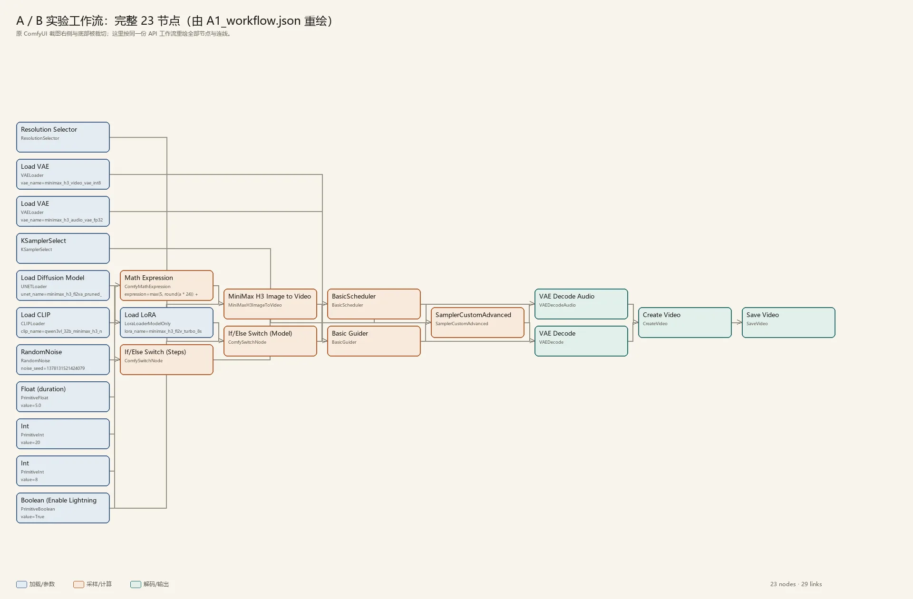
两个固定开销要有预期：冷启动的 pre 阶段约 26 s（A 26.26 s、B 26.71 s，主要是 TE 加载），VAE 解码与封装约 27–46 s（A post 38.69 s，B post 45.91 s，其中视频 VAE 32.2 s）。这两段不随步数变化，但会进入端到端账单。
4.2 FreeVideo：独立 runtime
FreeVideo 0.6.12 不是第二套模型，而是同一基座 H3 的另一套量化/管线版本：把权重换成 FP8 slim，再用两段式采样与显存管理，把 10s @1344×768 跑到同一张 30.5 GiB 卡上（另有 2.45 GiB 走共享内存）。它跑在独立 runtime 里：engine 在 C:\FreeVideo\FreeVideo-engine，前端是另一份 ComfyUI C:\FreeVideo\ComfyUI，Agent API 在 8189，与原生 ComfyUI 的 8188 互不干扰。
提交给 Agent API 的 job 关键字段如下（完整文件在 C:\FreeVideo\bench\job_main_10s.json）：
{"kind":"generate",
"seconds":10, "width":1344, "height":768,
"quality":"light",
"sampling":{"two_pass":true, "base_steps":8, "refine_steps":3},
"release_gpu_after":false, "seed":1378131521424079}安装链路在 Windows ARM64 上不是 stock，主要处理了四类兼容问题。
踩坑记录 / FreeVideo on ARM64。
freevideo-engine[runtime]同时硬钉了两个 triton-windows 版本（3.7.1 无 arm64 轮）；按constraints/windows-arm64.txt取 3.8.0.post28。- 本机 git smart-HTTP 不可用；diffusers 改用 codeload tarball + 本地补丁，并改写树哈希。
- ComfyUI 前端依赖
quickjs==1.19.4在 ARM64 无轮子；改用纯 Python stub。 - 自定义节点用 junction 挂到
custom_nodes\FreeVideo后，直接启动 ComfyUI(:8189) 才注册 Agent API。 - 启动时模型预取被跳过（host_memory_low，32GB RAM）；首次冷加载 81 s 已计入端到端。
三组主线 + D 基线：时间花在哪
| 实验与配置 | 端到端 | 采样 | 单步 / 阶段 | 每 1 秒成片耗时 |
|---|---|---|---|---|
| A（5s / 1344×768 / 8 步 turbo / INT8） | 15m59s（958.99 s） | 14m54s（893.95 s） | 首步 154.2 s，稳态约 105 s/步 | 185.6 s |
| B（10s / 960×544 / 8 步 turbo / INT8） | 14m15s（854.79 s） | 13m02s（782.05 s） | 首步 134.3 s，稳态约 93 s/步 | 84.4 s |
| C（10s / 1344×768 / 8+3 / FP8） | 9m37s（577.0 s） | 366.4 s（6m06s） | 首过 16.4 s/步，精修 67 s/步 | 57.0 s |
| D（5s / 1344×768 / 20 步 base / INT8） | 24m05s（1,445.3 s） | 21m46s（估算） | 65.3 s/步 | 279.7 s |
注：“每 1 秒成片耗时”= 端到端 ÷ 成片秒数，不是帧率；数值越小越快。D 的采样 1,306 s 按 65.3 s/步估算。
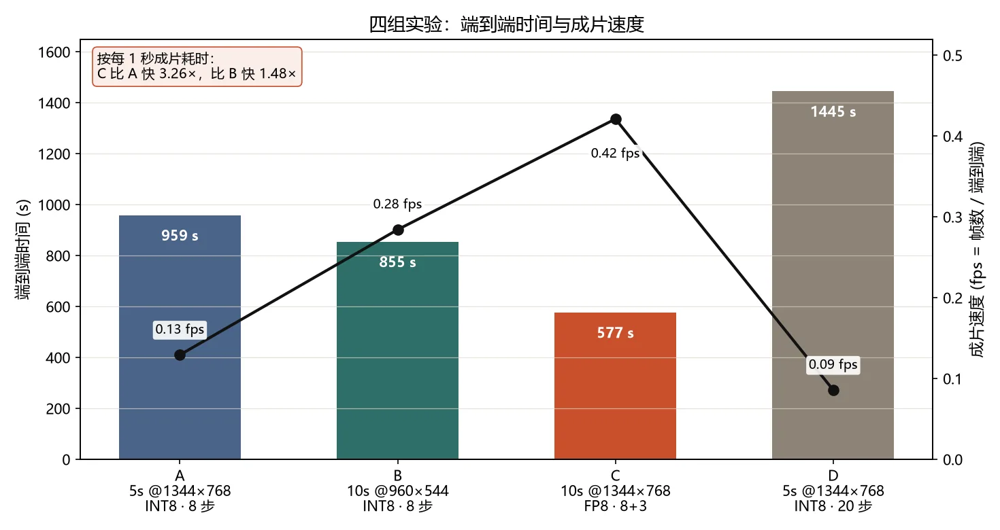
A 的采样占端到端 93.2%；首步 154.21 s，含 DiT 权重换入与首次分配，第 2 步回落到 72.53 s，第 3–8 步稳定在 99.36–113.28 s（均值约 105 s）。B 的采样占 91.5%，首步 134.33 s，第 3–8 步 89.81–96.60 s（均值约 93 s）。B 比 A 快 104.2 s（10.9%），而帧数是 A 的近两倍；按每 1 秒成片耗时算，A 是 185.6 s，B 是 84.4 s，B 的单位输出时长成本只有 A 的约 45%。在 token 预算相近（37,296 vs 36,720）时，时长本身不是主要成本项；成本由 token 数（分辨率×帧数）决定。10s @1344×768 未实测，不能据此说“10 秒没问题”。
C 的 577.0 s 里，采样 366.4 s，其余 210.6 s 主要是权重加载 81 s、VAE 解码 81 s、后处理 30 s、音频封装 33 s；其中约 14 s 与采样窗口重叠。阶段切分按 0.1 s 遥测里的显存/利用率拐点做，误差约 ±5 s：
| 阶段 | 相对提交 | 用时 | 观测 |
|---|---|---|---|
| 权重流式加载 | 0–81 s | 81 s | 显存 1.0 → 25.2 GiB，利用率均值 15.9% |
| 首过 8 步 @672×384 | 81–212 s | 131 s | 利用率 84.4%，约 16.4 s/步 |
| 上采样 / 切换 | 212–232 s | 20 s | 显存跳到 29.4 GiB |
| 精修 3 步 @1344×768 | 232–433 s | 201 s | 利用率 94.0%，约 67 s/步，最高温 82 °C |
| 后处理 / 准备解码 | 433–463 s | 30 s | 利用率 32.7% |
| VAE 解码 243 帧 | 463–544 s | 81 s | 显存峰值 31,058 MiB，利用率 90.1% |
| 音频解码 / 封装 | 544–577 s | 33 s | GPU 基本空闲，CPU / 磁盘 |
三段采样（首过 + 上采样 + 精修）合计 352 s，与引擎自报 366 s 的差额落在采样器前后处理；解码 81 s 与权重加载并列第三大阶段（各 81 s，占端到端 14%），前两名是精修 201 s、首过 131 s。
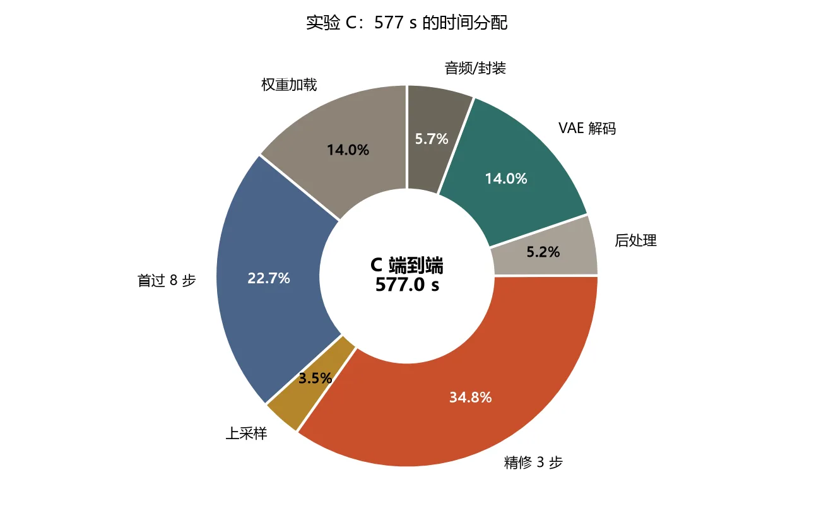
速度结论：
- C 对 B 是实测 1.48×（同为 10.125 s）；C 对 A 的 3.26× 是外推。 A 每 1 秒成片要 185.6 s，C 只要 57.0 s，按每 1 秒成片耗时归一化是 3.26×；但 A 没跑 10s @1344×768，1,878 s 不是实测。按端到端实测，C 对 A 是 958.99 / 577.0 = 1.66×。C 的像素面积是 B 的 1.98 倍。
- 省下来的时间主要来自“8/11 步只跑 1/4 token”。 C 的 11 步里 8 步在 672×384（18,144 token），只有 3 步在 72,576 token；按 token-步算总工作量 362,880，比 B 的 293,760 还多 23.5%，但采样吞吐是 990 token-步/s，A 是 334、B 是 376。FP8 与更少的共享显存外溢（2.45 vs 5.57/5.82 GiB）也有贡献；C 并非全部权重常驻——planner 只让 36/50 个 block 留在显存，14 个仍每步流式换入。
- 代价是更热、更费电。 C 采样期 72.7 °C / 79.7 W，A 是 58.2 °C / 41.1 W。A/B 是“高利用率、低功耗”的内存等待型；C 有 36/50 个 block 常驻显存，SM 更少等待（推断），所以温度与功耗都上去了。
- 没有可比的 8GB 同配方成绩，不做速度排名。 同一份社区表里，8GB 级 1344×768 / 10s / Light 的成绩跨度很大：3070 Laptop 8GB/27GB 625 s、5060 8GB 390 s、4060 Laptop 8GB 1296 s；版本、平台、参考视频脚注都不同（社区成绩原文）。本机 577 s 与这些成绩同一量级，30.5GB 没有带来数量级优势；原因更可能是 32GB 内存与 ARM64 平台，但本报告没有做跨平台控制实验，不能单独归因。
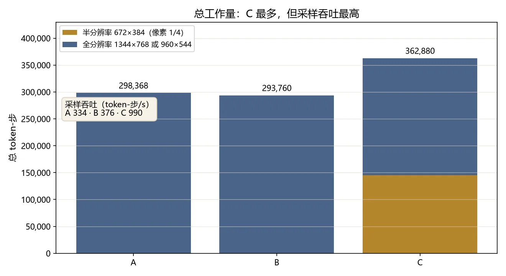
D 的 1,445.3 s 只说明 20 步 base 的代价：单步 65.3 s，比 A 的稳态约 105 s 快，但 20 步累加后采样约 1,306 s（按 65.3 s/步估算）；8 步 turbo 相对 20 步只有约 1.46× 的采样优势，而不是步数比暗示的 2.5×。D 的 --verbose、不同 prompt 与不完整遥测决定了它只能作方向参考。
三组主线都贴着 30.5 GiB
| 实验 | 峰值专用显存 | 共享峰值 | 采样均温 / 最高 | 采样利用率 | 采样功耗 | 采样能耗 |
|---|---|---|---|---|---|---|
| A | 31,108.3 MiB（30.38 GiB，99.6%） | 5.57 GiB | 58.2 / 64 °C | 90.8% | 41.1 W | 10.21 Wh |
| B | 31,077.9 MiB（30.35 GiB，99.5%） | 5.82 GiB | 58.9 / 64 °C | 90.7% | 38.8 W | 8.43 Wh |
| C | 31,058.1 MiB（30.33 GiB，99.4%） | 2.45 GiB | 72.7 / 82 °C | 87.6% | 79.7 W | 7.79 Wh |
| D | 31,188.6 MiB（30.46 GiB，99.9%） | 4.03 GiB | 70.2 / 77 °C | 93.6% | 68.7 W | — |
三条主线全部贴着 30.5 GiB 的上限：99.4–99.6%，没有一条留出 1 GiB 以上。差别在“借多少系统内存”：A/B 借 5.57/5.82 GiB，C 只借 2.45 GiB。这个差别与速度、温度同向——A/B 更像“高利用率、低功耗”的内存等待型（90.8%/41.1 W、90.7%/38.8 W）；C 只外溢 2.45 GiB，但并非全部权重常驻（36/50 个 block），SM 更少等待（推断），所以 87.6% / 79.7 W / 82 °C。是否因果，需要带宽/停顿计数验证。
C 的峰值出现在 VAE 解码段（31,058.1 MiB），typeperf 的 Windows 计数器给出 31,044.7 MiB，两个口径互相印证。按每 1 秒成片耗电：A 约 1.98 Wh、B 约 0.83 Wh、C 约 0.77 Wh；C 的绝对功耗最高，但摊到 10 秒成片上反而最省。
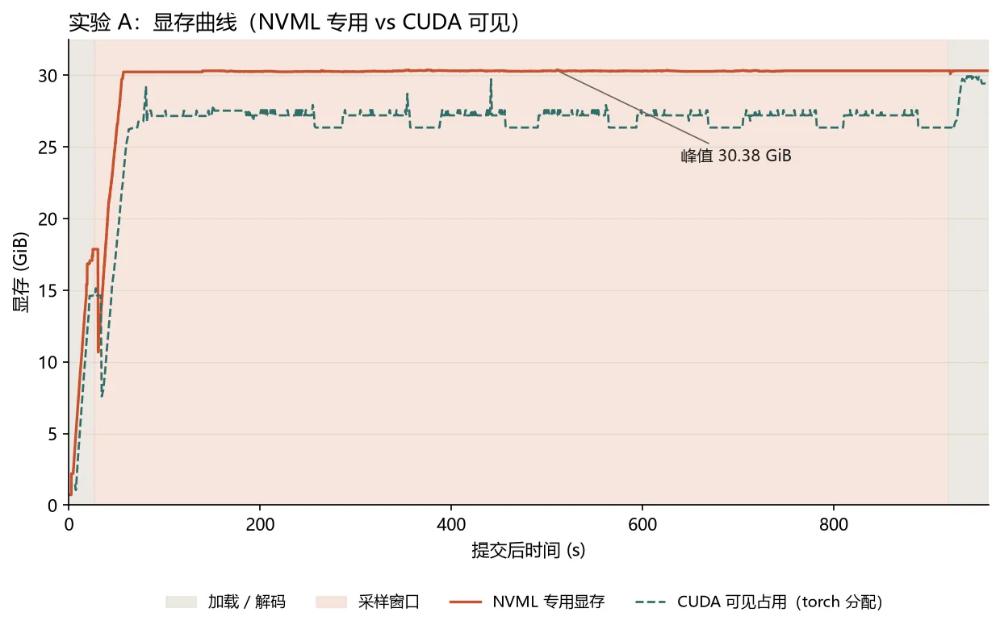
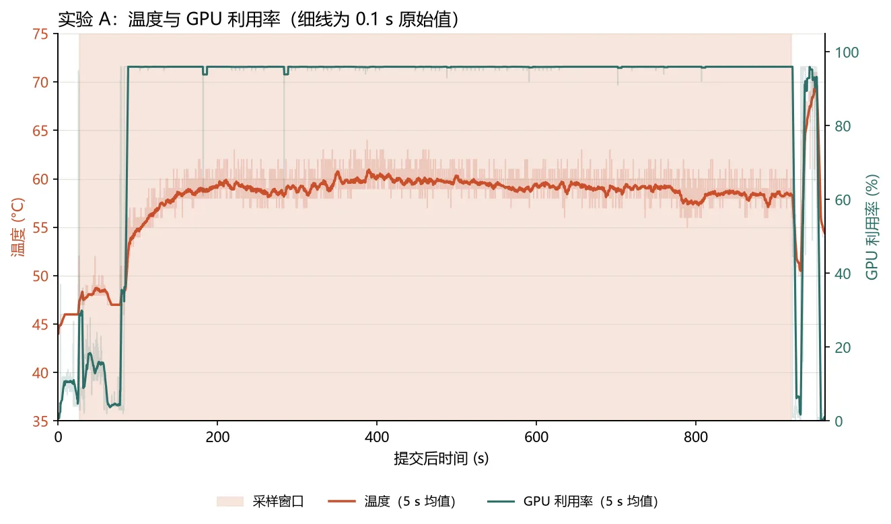
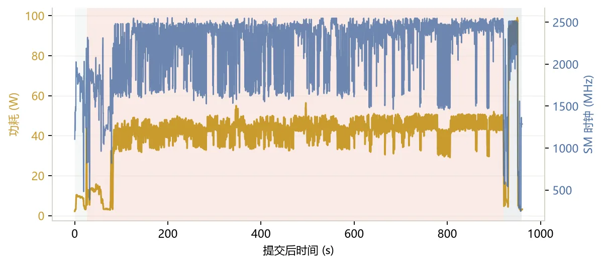
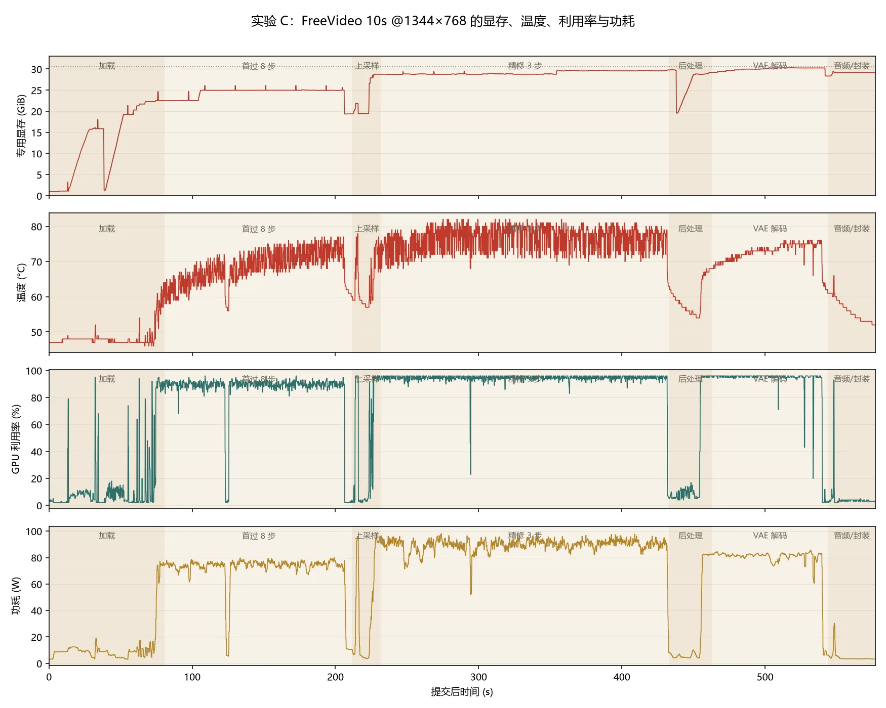
成片与质量：A、B、C 的抽帧和指标
A/B/C 用同一条提示词（红狐穿过雪原、日出、低机位跟拍）和同一个 seed（…079）；D 是另一条宽景剪影 prompt（记录为 sunrise，后段偏黄昏），只作 20 步 base 的出片参考。A 是 5s @1344×768（原生模型），B 是 10s @960×544，C 是 10s @1344×768（FreeVideo）。画质差异同时来自模型精度、采样路径、步数与构图，不能把三组当作严格的控制变量实验。下面的抽帧按 A/B/C 三列排列，D 单独一行。
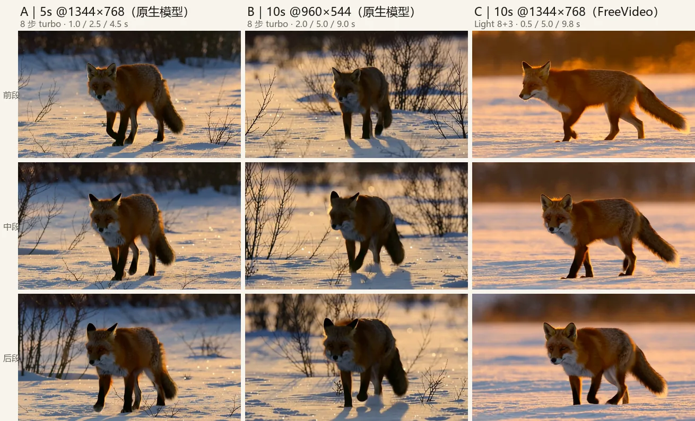
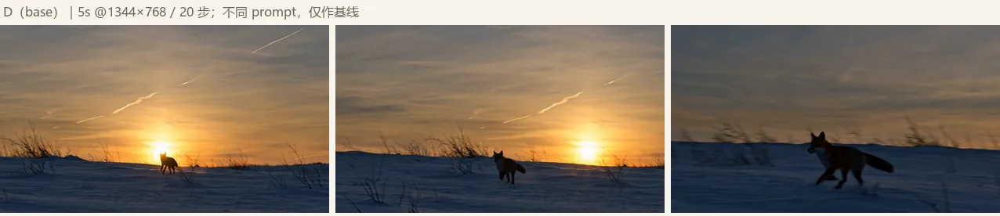
| 片 | 分辨率 / 时长 | 码率 | 锐度（原生 / 960 宽） | 帧间 MAD | 亮度闪烁 RMS | 音频 RMS |
|---|---|---|---|---|---|---|
| A | 1344×768 / 5.17 s | 6.00 Mbps | 95.2 / 193.8 | 7.85 | 0.201% | −31.3 dBFS |
| B | 960×544 / 10.13 s | 4.00 Mbps | 169.3 / 169.3 | 11.57 | 0.242% | −36.9 dBFS |
| C | 1344×768 / 10.13 s | 2.21 Mbps | 33.1 / 68.8 | 5.47 | 0.117% | −51.5 dBFS |
| D | 1344×768 / 5.17 s | 3.13 Mbps | 21.3 / 37.2 | 3.30 | 0.035% | −37.6 dBFS |
锐度是 Laplacian 方差，越高细节越多；MAD 是相邻帧平均绝对差，混合真实运动与伪影；闪烁是 5 帧中值去趋势后的亮度残差。三项都只能同内容横比，D 的剪影画面纹理少，锐度低不代表模型差。按静帧做纯视觉打分（不是 MOS）：A 4.2 > D 3.6 > C 3.5* > B 3.2；D 的构图更电影感，但主体只有剪影，不能与 A/B/C 同题比较。* C 的 3.5 来自另一次静帧评分，与 A/B/D 非同一批次，只作量级参考。
结论一｜8 步 turbo 在 5s @1344×768 上交付可用
A 是主体细节最好的一条：1.0 s 能辨认虹膜、胡须和胸前毛束，960 宽锐度 193.8；没有出现 turbo 常见的糊边、过饱和或结构崩坏，画面可交付；音频仍需 +10~15 dB 归一化与听审。主要可见瑕疵在 4.5 s，左前掌呈钝块。但这只证明 8 步能出可交付的短片，不能证明它等于 20 步；严格对照（8 步 vs 20 步、同 prompt / 同 seed）需要 20 步补测。
结论二｜10s @960×544 的代价是解析力，不是稳定性
B 的像素面积只有 A 的 50.6%，码率 4.0 vs 6.0 Mbps，同宽锐度低 12.6%；5.0 s 面部已经糊，8.75–9.25 s 出现前肢融合和尾根亮缝。但 B 的 MAD 变异系数 0.111（A 0.195）、亮度闪烁 0.242%（A 0.201%），没有出现全局崩坏。在 960×544 / 36,720 token 这一档，10 秒没有导致全局崩坏，掉的是细节；不能外推到未测的 10s @1344×768。
结论三｜C 的 10s @1344×768 稳但软
5 张抽帧（0.5 / 2.5 / 5.0 / 7.5 / 9.8 s）里狐狸的形体、毛色与日出暖调稳定，耳形、吻部、尾部轮廓没有 B 式的粘连或崩坏；代价是主体明显偏软，毛皮呈“喷绘 + 颗粒”感。脚掌有钝块，5.0 s 前肢交叉处有掌腿连接不清的孤块，7.5 s 面部最扎实。锐度全画幅/960 宽约为 A 的 0.35×（33.1 对 95.2、68.8 对 193.8），中心裁切约 0.48×（23.9 对 50.2）；差距一部分来自内容（A 有枝条、雪面闪光与冷暖分离，C 是干净雪原加平滑焦外），主因是 672×384 八步首过 + 只有 3 步全分辨率精修，其次是总码率 2.21 vs 6.00 Mbps（每像素 0.088 对 0.242 bit，约 1/2.7）。B 的中心裁切（119.3）反而高于 A（50.2），说明 Laplacian 会把 960 原生的压缩锐化与噪声也算成高频；这类数字只能同内容、同编码条件下横比。
结论四｜音频都能用，但只是环境底
A/B/C/D 都是 32 kHz 立体声、时长对齐；A/B/D 的 RMS −31.3 / −36.9 / −37.6 dBFS，99.5% / 95.4% / 96.8% 的能量在 1 kHz 以下，踩雪脆响很弱；C 更安静，RMS −51.5 dBFS、峰值 −37.2 dBFS，比 A 低约 20 dB，82% 的 20 ms 窗低于 −50 dBFS，79% 能量集中在 20–200 Hz，更像极轻风声/低频底噪，而不是可辨的踩雪脆响。没有做听测，只报电平与频段；交付前 A/B/D 需要 +10~15 dB、C 至少 +20 dB 归一化，并人工听审。
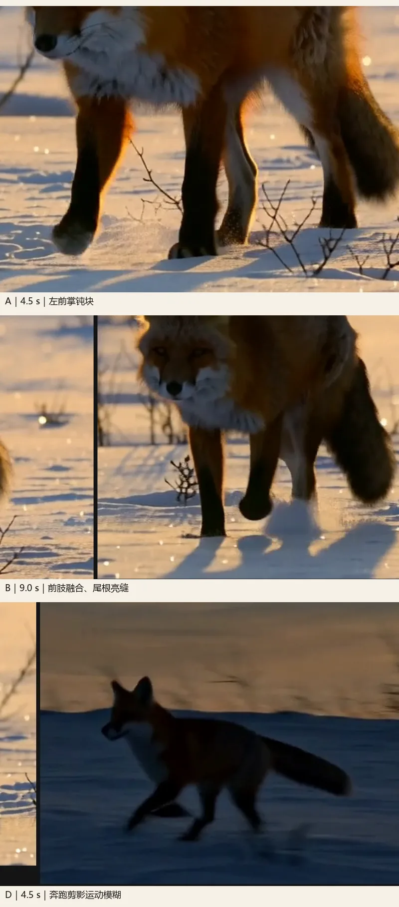
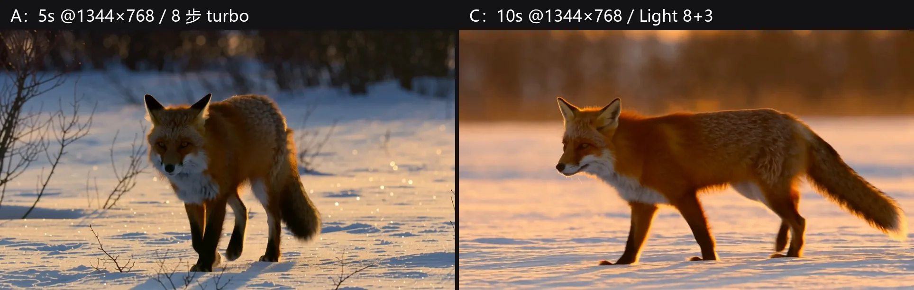
按“必须满足的格子”选，不按排名
| 需求 | 选择 | 预算 / 代价 |
|---|---|---|
| 画质优先、5 秒够用 | A：5s @1344×768 原生 / 8 步 turbo | 15m59s；主体细节最好；音频 +10~15 dB 后听审 |
| 要 10 秒、又要原生管线 | B：10s @960×544 原生 / 8 步 turbo | 14m15s；单位时长成本约 A 的 45%；解析力低于 A |
| 必须 10s @1344×768 | C：FreeVideo Light 8+3 | 9m37s；静帧 3.5/5（别批）、音频 −51.5 dBFS、最高 82 °C |
| 更高分辨率 / 更长时长 | 不建议在 30.5 GiB 上叠 | 三条主线已占 99.4–99.6%，没有余量 |
- 画质优先、5 秒够用：选 A，按 15m59s 做预算；主体细节、日出暖光和跟拍稳定性最好，交付前只差音频 +10~15 dB 归一化与听审。
- 要 10 秒、又要原生管线：选 B，按 14m15s 做预算；它和 5s 的 token 只差 1.5%，每 1 秒成片耗时是 A 的约 45%，但同宽解析力比 C 高、比 A 低。
- 必须 10s @1344×768：选 C，按 9m37s 做预算；不建议在原生管线硬跑 72,576 token（未实测，按现有占用推断会 OOM）。代价是静帧 3.5/5（另一次评分，仅参考）、音频 −51.5 dBFS、最高 82 °C。
- 监控两件事：原生管线看共享显存（A/B 峰值 5.57/5.82 GiB，系统空闲最低 806.7/1,230.3 MiB）；FreeVideo 看温度（82 °C）与 host 内存（32GB 是瓶颈，planner 只给 15.6 GiB）。跑前关掉浏览器硬件加速和其他 GPU 进程。
一句话：30.5GB 能跑 10s @1344×768，但要换管线——A 赢在细节，C 赢在时间，B 是 10 秒降分辨率的折中；分辨率、时长、画质，一次只能挑两个。
方法与五条局限
测量口径：本报告数据来自本机 NVML 0.1 s 采样、typeperf GPU Adapter 1 s 采样、ComfyUI /system_stats 1 s 采样、FreeVideo chain 计时与节点进度。端到端 = 提交到成功；A/B 采样 = 采样器节点时长，C 采样 = 引擎自报 sampling_seconds；峰值显存 = 作业窗口内 NVML 专用显存最大值。C 的阶段切分按 0.1 s 遥测的显存/利用率拐点，误差约 ±5 s。10s 原生 @1344×768 没有运行，OOM 是按 72,576 token 与 A 的 99.6% 占用做出的推断，不是实测。
- 单机、单日、样本少：A/B/C 各 1 次有效运行，D 是冒烟基线；没有置信区间，不能外推为 H3 在所有 30GB 卡上的表现。
- D 的对照偏差：
--verbose冒烟、prompt 不同、GPU 遥测只覆盖第 4–20 步、采样按 65.3 s/步估算；它只能说明单步成本的方向，不能与 A/B/C 做严格同条件排名。 - C 是另一条管线：FP8 slim + 8+3 两段式，A/B 是 INT8 ConvRot + turbo LoRA；C 只有 1 次运行，安装经过 ARM64 依赖修补与手动节点注册，不是 stock。速度与画质倍数是“本机这两条管线”的倍数，不是模型绝对能力。
- 32GB RAM 是隐形天花板：共享显存分页会同时污染耗时与功耗读数；47,021.8 MiB 的 CUDA 可分配池不是显存，跨机器比较必须同口径。
- 10s 原生 @1344×768 未运行：OOM 是基于 72,576 token 与 A 的 99.6% 占用做出的推断，不是实测结论；真要确认需单独跑一次并记录 OOM。
质量指标来自交付 H.264/AAC 文件，含压缩影响；只做静帧检查，未回放视频、未听审音频，分数不是 MOS。参考来源：ComfyUI · Comfy-Org/MiniMax-H3 · FreeVideo v0.6.12 · MiniMax H3 官方仓库。原始遥测图与日志随本报告资产一并提供；完整证据索引见 08 证据墙。